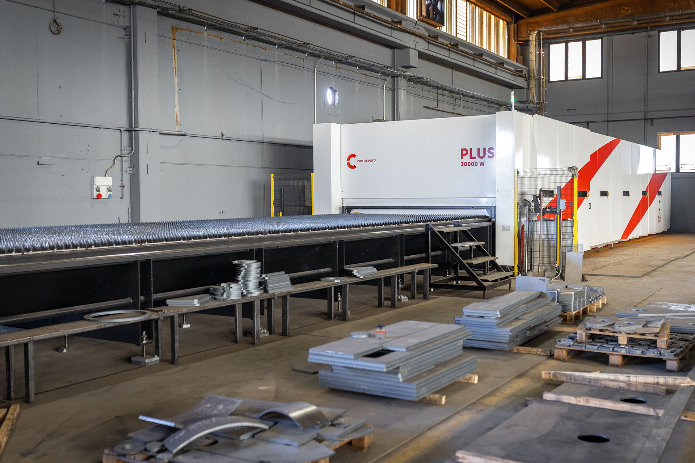

Qui ho incluso anche una macchina al laser, per l'incisione ed il taglio delle lamiere.
Metalteknika lavora svariate tipologie di materiali: metalli (acciaio,alluminio),policarbonato,PVC.
Una volta che le parti ordinate dal cliente sono state tagliate e ripulite, queste sono pronte
per essere spediti al cliente.
Un problema è quello di rispettare le tempistiche imposte dai clienti, perchè spesso molti ordini
sono considerati come urgenti, quindi viene stabilito un certo ordine con cui preparare, tagliare e spedire le ordinazioni.